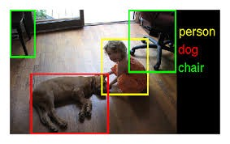
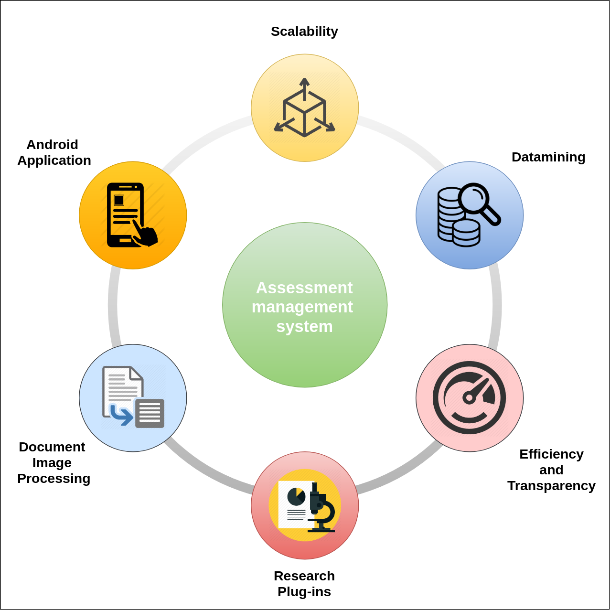

|
Mohan Kumar A
mohankumaar3 [at] gmail [dot] com
I work as a Deep Learning consultant at Activation Functions Pt. Ltd,an EduTech startup, based out of Hyderabad,India.
Previously, I worked as a Applied Research Fellow with Prof. C.V.Jawahar at CVIT,IIIT-Hyderabad. I worked on projects involving automating the evaluation of handwritten student assignments. I worked on the webapp development part of the project using Django and Python.
Prior to that, I worked at Cognitivescale on data ingestion pipeline, recommendation apis and test automation. I have also worked on continuous integration pipeline.
I graduated from BITS PILANI, Hyderabad Campus in 2016 with a Master's Degree (M.E) in Computer Science with specialization in Information Security.
Email /
Medium /
Twitter /
Github /
LinkedIn /
Resume
|
|
|
Research
My interest lies in the fields of Computer Vision and Machine learning. Recent interest is in applying reinforcement learning techniques in games like Rubik's cube.
|
- On December 7, 2018, I gave a workshop on "An intro to Linear Regression and Implementation" at Activation
Functions Pt. Ltd.
- On September 7, 2018, I gave a workshop on "Deep Learning Introduction" at Activation Functions Pt. Ltd.
|
Blog
Following are some of my blogs written in the past few years.
|
|  |
💥 Computer Vision related competitions
As an early stage researcher in Computer Vision, I was asked the question — Are than any Computer Vision Challenges other than the ones we find in Kaggle?
So, here I compiled a list of all the CV Challenges that have happened/been happening in the past few years......
|
|
|
⛵ Laptop and life- A simple analogy
Recently,after my Laptop getting shut down automatically for some reasons, I came to an understanding that our lives are pretty much similar to that of any electronic device. Well, this won’t be an article for productivity tips,I just wanted to share a few of my observations......
|
|  |
Document Image Workflow System for Scaling Student Assessments
Vijay Rowtula, Varun Bhargavan, Mohan Kumar, C V Jawahar, 2018
CVPR Workshop track - CMLA 2018
The practice of assessment is a problematic issue with increase in class sizes in educational establishments worldwide.
In this paper, we present an Assessment Management System (AMS) framework which is designed to enhance the approach of student assessments done by faculty.
While learning management system (LMS) is an elearning approach in higher education space, AMS is designed to meet the emerging needs of all realms of education (schools/colleges), especially in handwritten assessment space.
|
|